Lycian Way
Turkey's waymarked coast path past ancient Lycia
There are 540 km between the two ends of the Lycian Way, and Hisarçandır (near Antalya) is the far one. You begin at Ölüdeniz. Watch Walks moves you along it with the steps you already take, so it's about 21 weeks at 5,000 steps a day. Here are its 19 landmarks, in the order you meet them, photographed and written up.
- 540km end to end
- 19landmarks
- 21 weeksat 5,000 steps a day
- Hisarçandır (near Antalya)finishes at

The landmarks of Lycian Way
19 landmarks, in walking order. Each photograph is by the person credited beneath it, used as they licensed it.
-
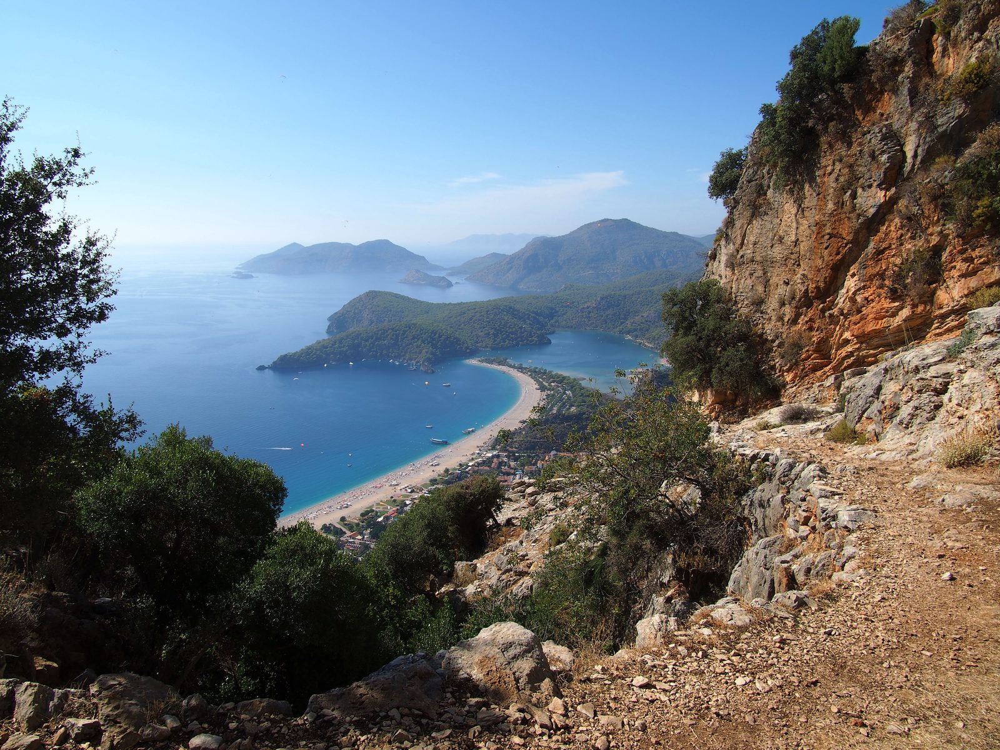
Photo: rheins · Wikipedia, CC BY 3.0 Ölüdeniz
Red-and-white waymarks begin above the Ölüdeniz lagoon, where paragliders spiral down from Babadağ onto the sandbar. Kate Clow researched and waymarked this route in 1999, stitching goat paths and Roman roads into some 540 kilometres of trail — Turkey's first long-distance footpath. From the beach it climbs into pine forest toward the sea cliffs.
-
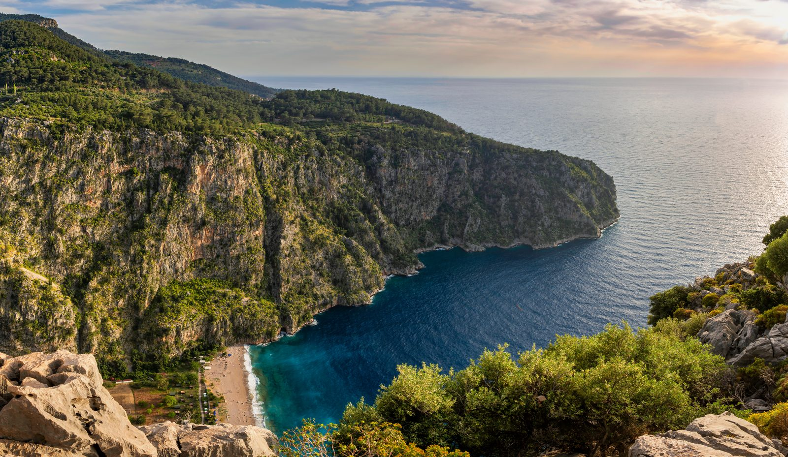
Photo: faktor1komma5 /by Claus P. Heibel · Wikipedia, CC BY 2.0 Butterfly Valley
A dizzying spur drops to a canyon cleft in the coast, its floor reachable only by scramble or boat. In summer the gorge fills with Jersey tiger moths, thousands of them clinging to the shaded rock. Most walkers only peer over the lip from the clifftop; the descent is a rope-assisted gamble few attempt with a full load.
-
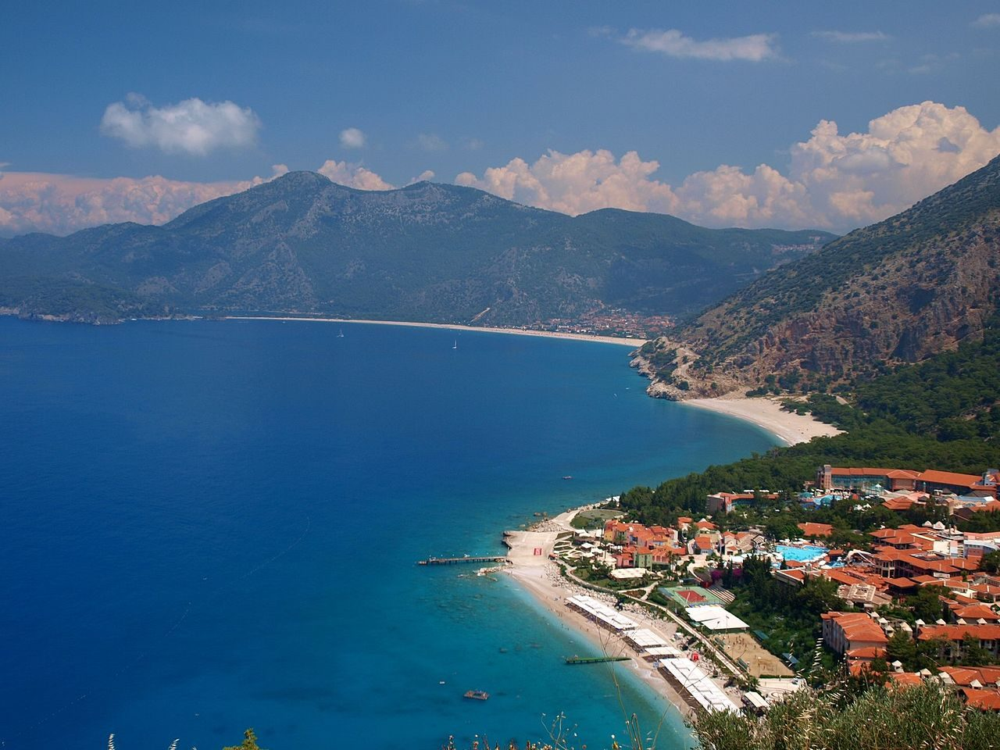
Photo: Andrzej Szkopiński · Wikimedia Commons, CC BY 3.0 Faralya
Perched on the cliff edge above Butterfly Valley, this scattered village — officially Uzunyurt — holds the first pansiyon beds and gözleme cooked on a saç. Terrace restaurants cling to the drop, with the sea some 350 metres straight below. The coast beyond only grows steeper.
-
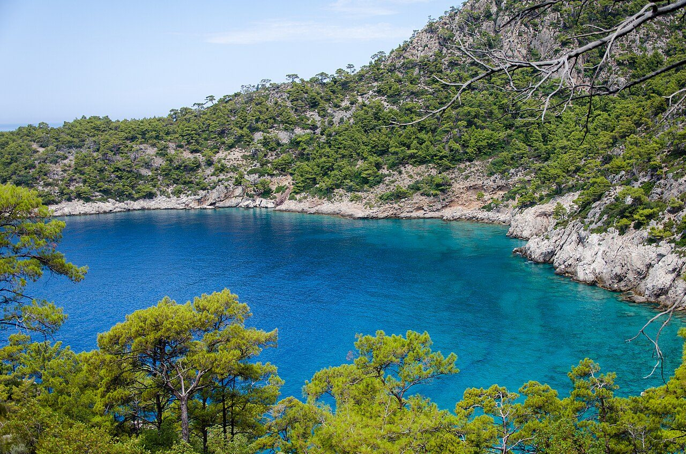
Photo: canonim · Wikimedia Commons, CC BY 2.0 Kabak
The path spills into a green amphitheatre of terraced gardens sloping to a wild beach. Once a hippie hideaway of bamboo huts, Kabak now mixes yoga camps with old orchards. Beyond the cove a long climb leads inland toward the interior ridges and the ruins of Sidyma.
-
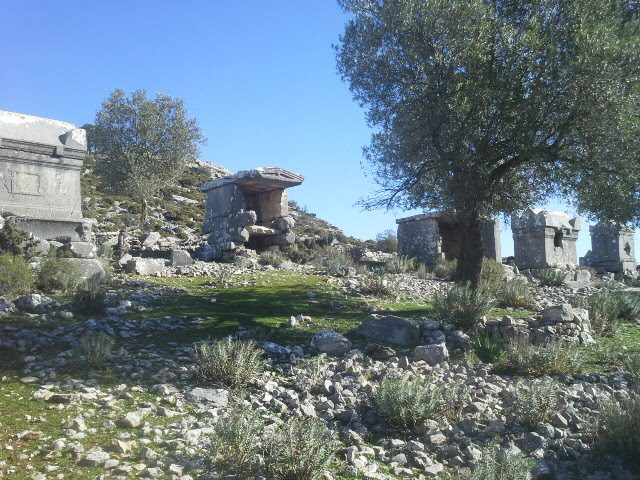
Photo: Korel aydoğdu · Wikimedia Commons, CC BY-SA 4.0 Sidyma
Ancient stones surface everywhere in the sleepy hamlet of Dodurga: sarcophagi in the wheat, a Lycian temple tomb doubling as a garden wall, columns propping up a village mosque. Sidyma was a minor Lycian city that never grew grand, and that neglect preserved it. Farmers shrug at the marble underfoot as they herd their goats past.
-
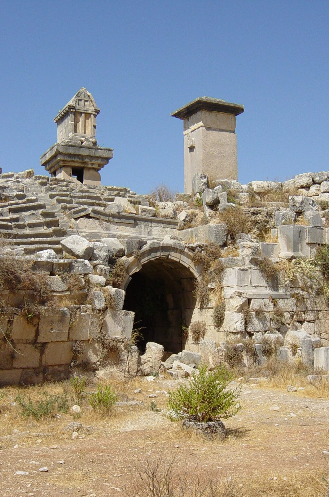
Photo: Pot Noodle · Wikimedia Commons, CC BY 2.0 Xanthos
Xanthos was the capital of ancient Lycia and twice the scene of mass suicide, its people destroying themselves rather than yield — first to the Persians around 540 BC, later to Brutus in 42 BC. The Harpy Tomb and inscribed pillars mark it as a UNESCO World Heritage Site. Much of its finest sculpture was carried to London in 1842 and never returned.
-
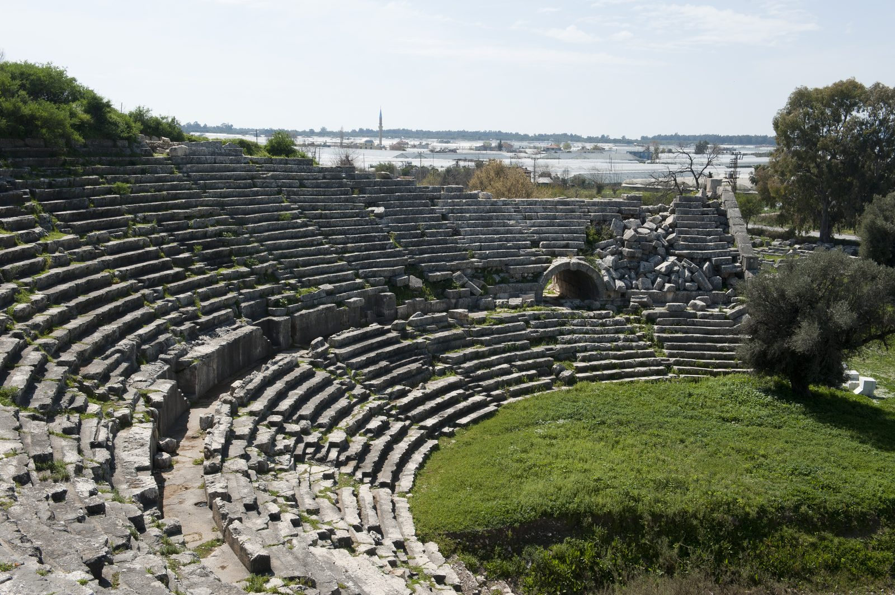
Photo: Dosseman · Wikipedia, CC BY-SA 4.0 Letoon
Three temples share a marshy hollow: shrines to Leto and her twins, Apollo and Artemis, born (so the Lycians claimed) on this coast. A trilingual stele found here — Lycian, Greek and Aramaic — helped crack the lost Lycian tongue. Frogs now own the sacred spring, croaking where priests once poured libations.
-
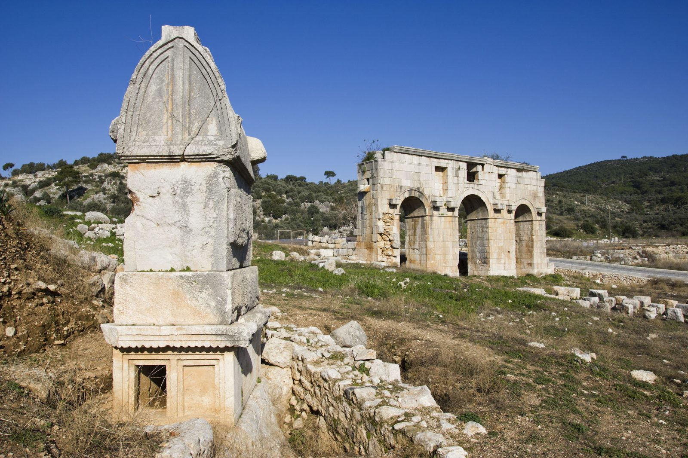
Photo: William Neuheisel from DC, US · Wikipedia, CC BY 2.0 Patara
Eighteen kilometres of pale sand run empty beyond the dunes, closed at dusk so loggerhead turtles can nest undisturbed. Behind it lies a drowned Roman harbour, a lighthouse among the oldest known, and the Lycian League's parliament — a stone council chamber some call an ancestor of democracy. Saint Nicholas was born in this silted-up port.
-
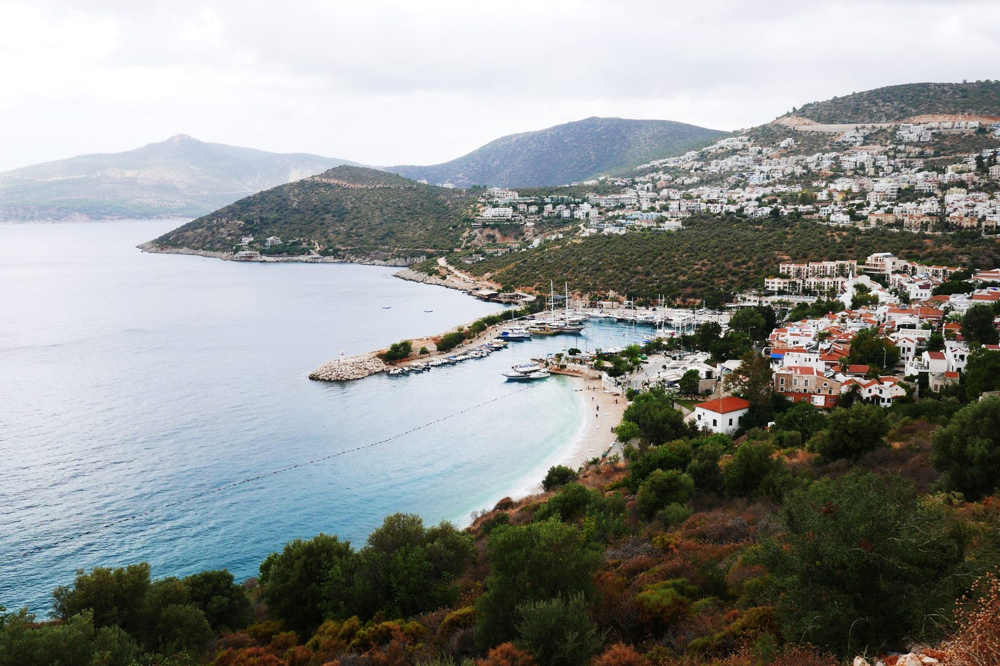
Photo: Cooty16 · Wikipedia, CC BY-SA 4.0 Kalkan
Whitewashed houses cascade to a yacht harbour, bougainvillea blazing over the lanes. Once a Greek fishing settlement called Kalamaki, Kalkan emptied in the 1923 population exchange and slowly refilled as a resort, its rooftop restaurants now trading on the view. The stretch toward Kaş traverses long, exposed limestone with few springs.
-
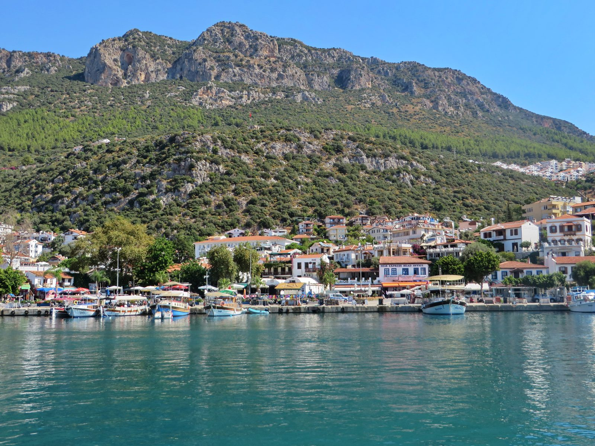
Photo: Luc Coekaerts · Wikipedia, CC0 Kaş
Rock-cut tombs stare down from the cliffs above a harbour town built over Lycian Antiphellos. A tiny Hellenistic theatre faces the sea, and a lone sarcophagus stands in the main street, lion heads carved on its lid. Divers gear up here for the sunken ruins scattered across the bay toward Kekova.
-
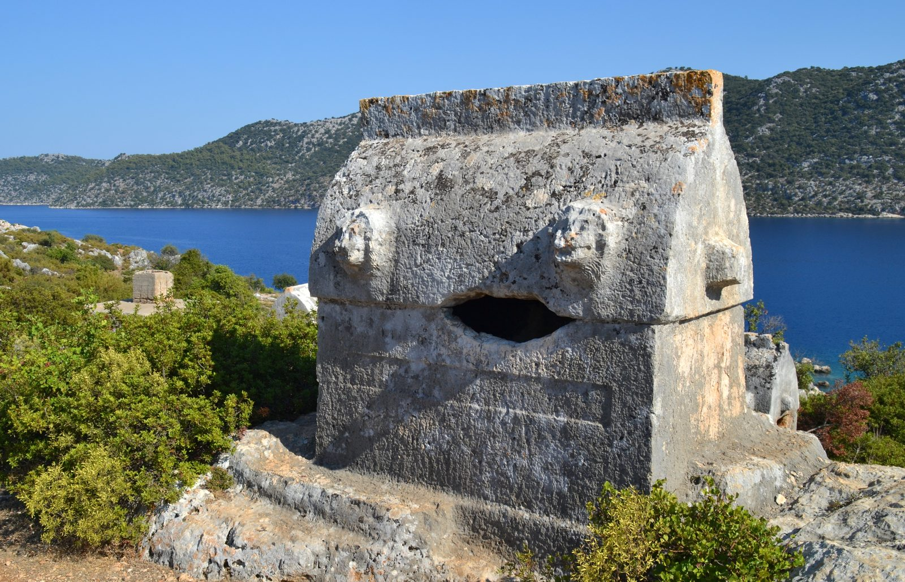
Photo: Gisela s · Wikipedia, CC BY-SA 4.0 Aperlae
A lonely finger of coast leads to Aperlae, a city half-swallowed by the sea. Foundations and harbour walls run straight into clear water, tilted by centuries of slow subsidence. No road reaches the site; only walkers and the occasional gulet arrive. The sunken streets lie visible beneath the surface, the shore beyond running on toward Myra.
-
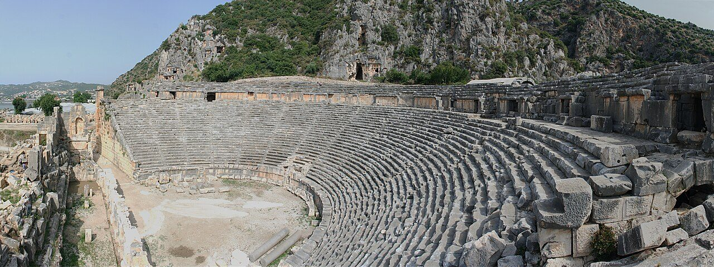
Photo: Ingo Mehling · Wikimedia Commons, CC BY-SA 3.0 Myra
Above modern Demre, a honeycomb of house-shaped tombs is carved straight into the cliff, with a Roman theatre spilling masks and reliefs below. Nearby stands the church of Saint Nicholas, the fourth-century bishop of Myra whose generosity became the Santa Claus legend. Greenhouses of tomatoes now crowd the plain the ancients called home.
-
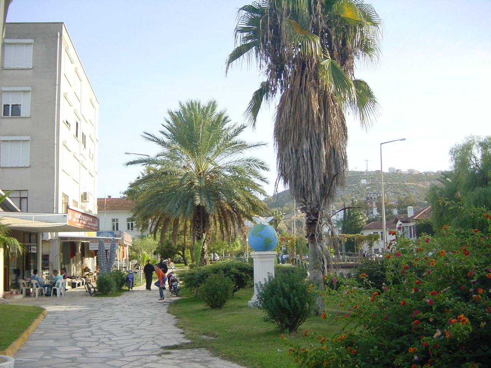
Photo: Sulzbeach · Wikimedia Commons, CC BY-SA 3.0 Finike
Scent of orange blossom hangs over this harbour town, the citrus capital of the coast, where crates of fruit stack along the marina. Ancient Phoenicus lies mostly buried beneath the streets. It is a working place, not a resort — a good spot to resupply before the trail turns inland and climbs hard toward the Olympos ridges.
-
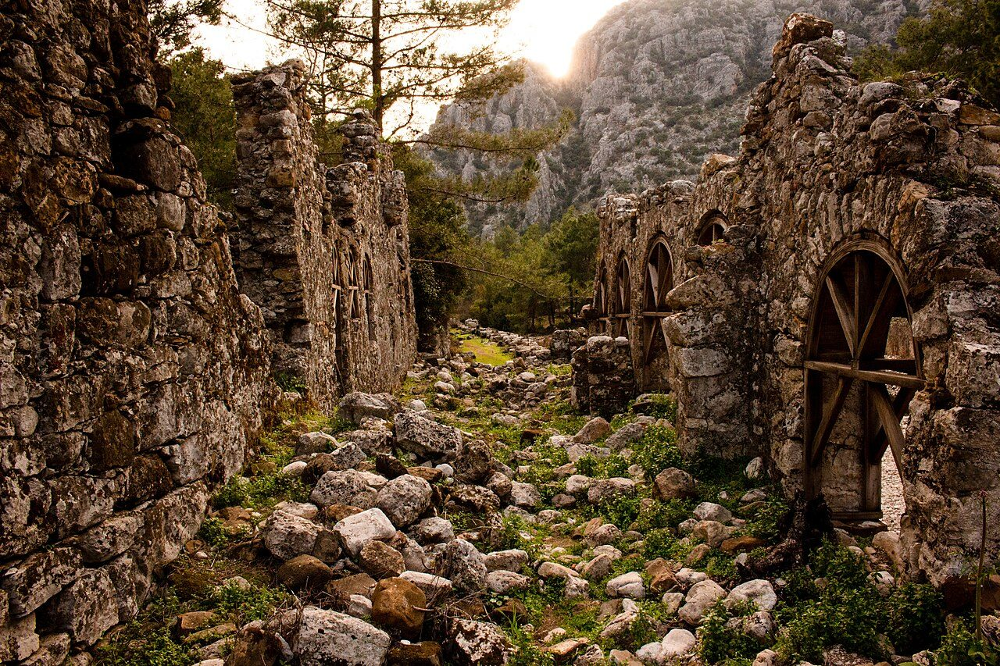
Photo: Josh.artofwayfaring · Wikimedia Commons, CC BY-SA 4.0 Olympos
Ruins drown in oleander and wild fig where a river meets a pebble beach: temple gates, a Byzantine bath, tombs among the reeds. This was a pirate stronghold under the chieftain Zeniketes until Rome crushed it. Today walkers sleep in the treehouse pensions of the valley, a scruffy, beloved trail institution.
-
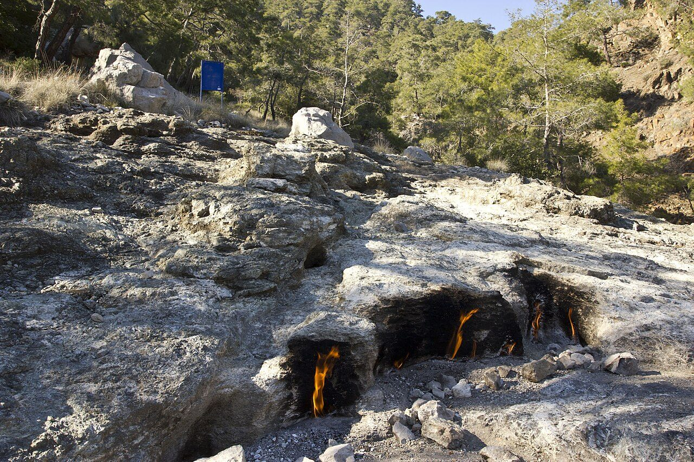
Photo: William Neuheisel from DC, US · Wikimedia Commons, CC BY 2.0 Yanartaş
After dusk, flames rise straight from the bare rock on the dark hillside of Yanartaş, dozens of them, burning without fuel. Methane seeping through the stone has fed these fires for millennia, and sailors once steered by them. Greek myth placed the fire-breathing Chimaera here, slain by Bellerophon astride the winged Pegasus. The flames need no match to light.
-
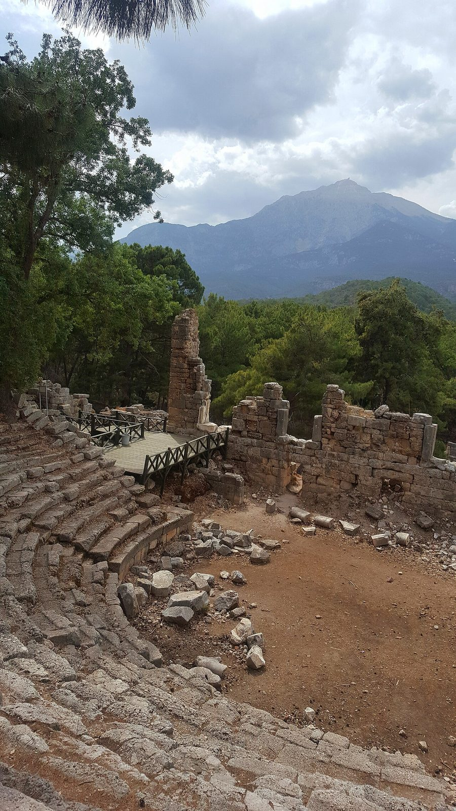
Photo: Özgesncnnnn · Wikimedia Commons, CC BY-SA 4.0 Phaselis
Three small harbours notch a wooded headland, linked by a marble avenue and an arched aqueduct running down to the water. Alexander the Great spent the winter of 333 BC here and, the story goes, garlanded the statue of the local-born poet Theodectes after a revel. Aleppo pines shade the ancient quays, and Antalya's sprawl feels a world away.
-
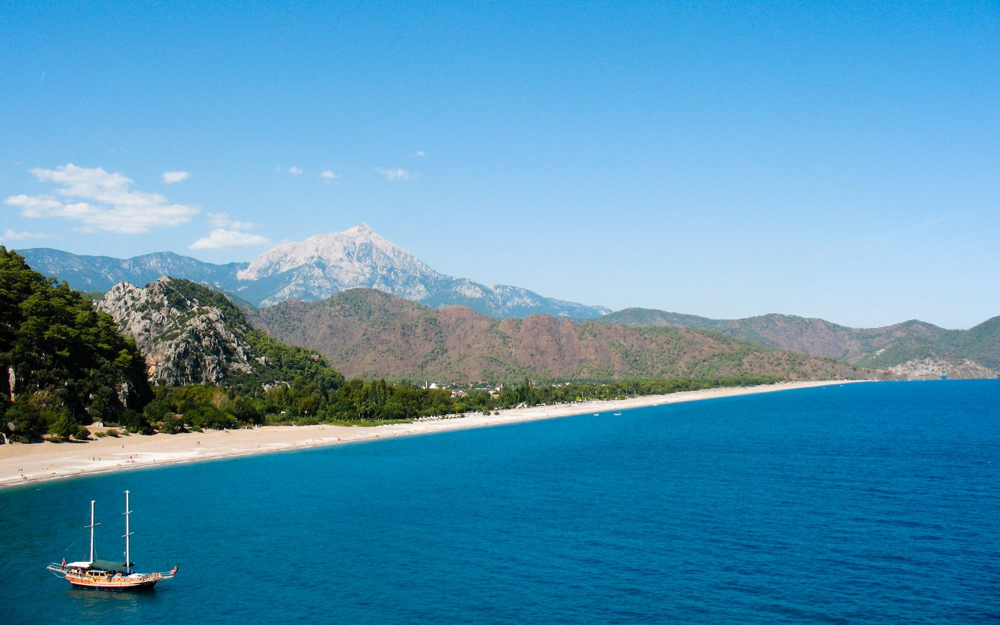
Photo: Alex Graves · Wikipedia, CC BY-SA 2.0 Tahtalı
A high variant climbs toward Tahtalı, the 2,365-metre peak the ancients also called Olympos, its cone often dusted white above the blue coast. A cable car hauls visitors to the summit from Tekirova, while the walking route gains the ridgeline on foot through cedar and thinning pine. From the top the sea view stretches from Kemer to the horizon.
-
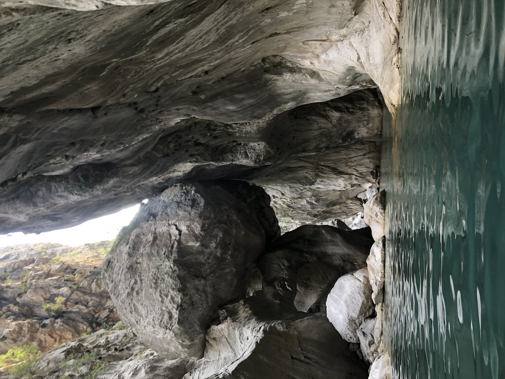
Photo: Alev Akdağ · Wikimedia via Openverse, CC BY-SA 4.0 Göynük
The route drops to a narrow canyon behind Kemer, where a cold stream carves between walls of pale rock into deep green pools. Below the gorge, plane trees shade a village of the same name. It is the last great cleft before the trail turns up into the pine hills for the final push toward Antalya's back country.
-
Hisarçandır
Five hundred and forty kilometres from the Ölüdeniz lagoon, the waymarks end at Hisarçandır, a quiet upland village in the hills above Antalya near the climbers' crags of Geyikbayırı. No monument marks the finish — only pine, goat bells, and the whole Lycian coast strung out to the west: rock-cut tombs, sunken cities, and the flames of Yanartaş that never go out. The Lycian Way ends here.
Walking the Lycian Way
Your watch is already counting these steps. Watch Walks spends them on the Lycian Way, all 540 km of it, and hands you each landmark as you reach it. There's no route recording, no account and no ads. The Inca Trail is free; this one is a one-time purchase with no subscription.
Other trails in Asia
- Shikoku Pilgrimage 1,200 km · Japan
- Annapurna Circuit 128 km · Nepal
- Jordan Trail 675 km · Jordan
- Manaslu Circuit 177 km · Nepal
- Nakasendo Way 530 km · Japan
- Kumano Kodo 46 km · Japan